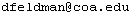

Basic Info
Instructor: Dave
Feldman
Email: 
Office: Second Floor, Turrets Annex
Office Hours: By appointment.
Teaching Assistants: Kaitlyn Clark and Heath Fuqua
Help Sessions: TBA
Texts
- Chaos: Making a New Science by James Gleick. This is a popular science book and is not a traditional text.
- Chaos and Fractals: An Elementary Introduction, David Feldman, Oxford University Press, 2012. (I donate to a local charity the royalties I receive from books sold for this class.) I'd suggest checking out the list of errata.
- We'll also read a few short papers, and quite likely a short story and some poetry. The exact assignments will depend on the interests of the class.
Evaluation
Your evaluation will be loosely based on the following:
- Weekly Homework Assignments: 50 percent.
- Final Project: 25 percent.
- Class Participation: 10 percent.
- Short Papers: 15 percent.
In general, I recommend against grades; I believe they are more likely than not to interfere with genuine, reflective learning. This is especially true in this class, where I have found that many of the class activities really don't lend themselves to letter grading. However, I will assign grades (for those who so opt) by following the guidelines in the COA Course Catalog. I do not have any quota of A's, B's, etc.
Class Structure and Details
- The final version of this and related documents can be found on the course web page, http://hornacek.coa.edu/dave/Teaching/Chaos+Fractals.W17.
- This class meets both the ES and the QR requirements. At the same time.
- Homework will usually be due Fridays at the end of the day. More than one unexcused late homework assignment will likely result in me mentioning this in your narrative evaluation and may result in a lowering of your grade.
- You are strongly encouraged to work together on homework. You can also consult me, class tutors, other faculty, friends, and family. However, the homework you hand in should represent your own understanding. This means that if your friends get a homework problem and you don't understand how they did it, you shouldn't copy their solution and turn it in.
- Guidelines for writing up homework problems can be found here.
- You will do a final project for this class. If you wish, you can collaborate with other students. Although projects can take varying forms, most will end up giving a presentation of around 15 minutes towards the end of the term. For more info, see the project guidelines.
- There will frequently be reading assigned for class. When this is the case, you should read carefully and come to class ready to discuss and share ideas.
- You will write three short (2-3 page) papers exploring ideas from the book by Gleick and/or our discussions. Information about what's expected for the short papers can be found here.
- We may need to schedule an extra class or two during weeks 9 or 10 so we have enough time for the presentations.
- As I plan on sending out homework assignments and other information via email, it is important that you check your email regularly.
- I expect you to attend class.
- Academic misconduct—cheating, plagiarizing, etc.—is bad. Any cases of academic misconduct may result in a judicial hearing. Here is the faculty-approved statement about plagiarism: By enrolling in an academic institution, a student is subscribing to common standards of academic honesty. Any cheating, plagiarism, falsifying or fabricating of data is a breach of such standards. A student must make it his or her responsibility to not use words or works of others without proper acknowledgment. Plagiarism is unacceptable and evidence of such activity is reported to the academic dean or his/her designee. Two violations of academic integrity are grounds for dismissal from the college. Students should request in-class discussions of such questions when complex issues of ethical scholarship arise.
- For a more informal description of this course, see this collection of thoughts.
Hours of Academic Engagement
You should expect to spend a minimum of 150 academically engaged hours associated with this one-credit course. These 150 hours will be spent roughly as follows: 3 hr/wk in class, 4 hr/wk reading and preparing for class discussions, 5 hr/wk on homework, and 3 hr/wk on your final project.